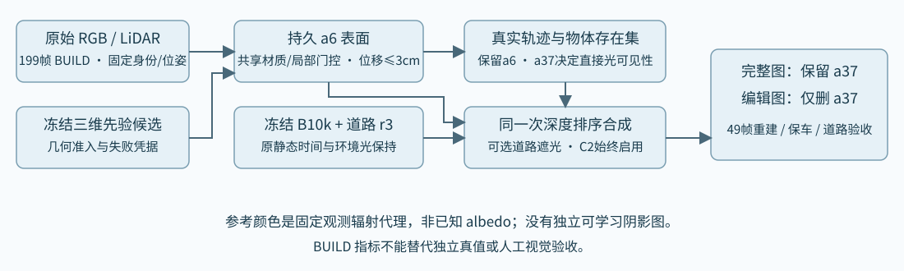
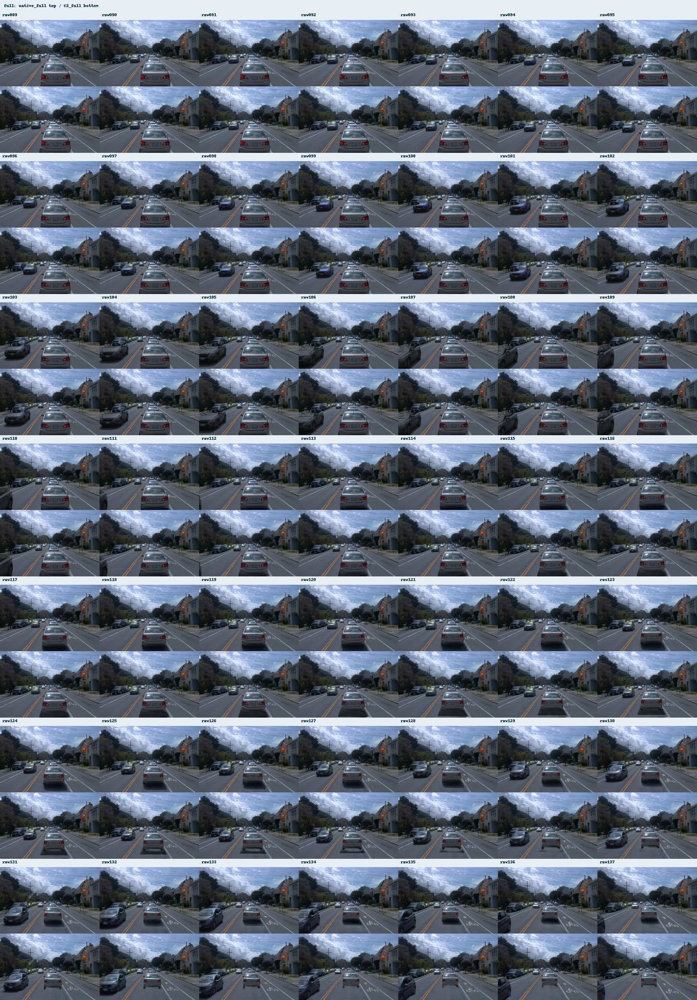
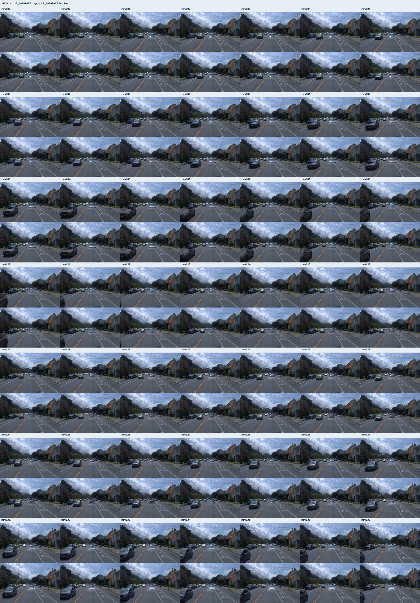

C2未通过：没有超过身份10k+道路修复1k基线
C2未通过：没有超过身份10k+道路修复1k基线完整重建未达预登记门槛。C2 相对原 Native：PSNR -1.7038 dB，SSIM -0.019294，LPIPS 0.022940。
旧r3 always-on full=28.10只是将删除后处理直接常驻的压力测试，不是原baseline不编辑流程bug；真正不编辑基线是Native30.45。本轮保留原基线，不以该压力测试降低门槛。
human_verdict=null；quality_accepted=false。所有输入属于 BUILD，尚无独立完整车身或清洁道路真值。
Scene008：仅删a37，保留a6及其他车。
完整图门槛：PSNR 下降≤0.05dB、SSIM 下降≤0.001、LPIPS 增加≤0.002，并且无明显可见退化；a6 真实可见域优于强组合基线；matched conservative-road核心指标不明显退化。5%仅为数值容差，不是改善目标。

49帧同步视觉核对
四画面共享同一 raw 帧号。上排检查不编辑完整重建，下排检查道路与 a6 保留；不能靠关闭 C2 或修复分支通过上排验收。
raw105
原 Native：保留 a37

C2 始终启用：保留 a37

强组合 r3：仅删 a37

C2：仅删 a37，保留 a6

导出49帧视频：native_full · C2_full · r3_delete37 · C2_delete37
完整49帧contactsheet（点击可放大）

完整图：每格上为原基线、下为C2，覆盖全部49帧。
删a37图：每格上为原基线、下为C2，覆盖全部49帧。完整重建：必须维持原 Native
| 方法 | PSNR ↑ | SSIM ↑ | LPIPS-VGG ↓ |
|---|
| 原基线不编辑流程：Native（强制比较） | 30.454978 | 0.936408 | 0.086108 |
| 删除后处理直接常驻的压力测试 | 28.101776 | 0.916426 | 0.108620 |
| C2 始终启用 + a37 | 28.751205 | 0.917114 | 0.109048 |
原始 RGB 先归一化为浮点，再以 OpenCV INTER_LINEAR 缩放至480×320；三个指标先逐帧计算再49帧平均。a6训练缓存GT与本次原生GT最大差为 0.000000。
a6：真实可见观测域
固定 visible_evidence_mask，共 31,610 像素帧。Native_full为真正原基线不编辑；r3_full为常驻压力测试；r3_delete37为用户指定的身份10k+道路修复1k编辑基线。未知/被遮挡车身不作观测真值；可见域改善也不能证明完整隐藏表面正确。
| 方法 | sRGB MAE ↓ |
|---|
| native_full | 0.031410 |
| r3_full | 0.031446 |
| C2_full | 0.057657 |
| r3_delete37 | 0.030819 |
| C2_delete37 | 0.059412 |
道路核心：保守匹配域与旧全proxy并列
真实a6全盒轨迹投影至原Native相机，凸包+2px构成可能被保留a6占据的域；不用PVD/Omni输出或C2图选域，也不把OBB当真实body GT。双方从同一r3道路域排除此possible域，仍使用同一参考、同一分母。未知显露body没有独立RGB真值，不应被安排成road GT。
测量修正由root在正式前提出；凭据在formal进行中落盘，final评分前冻结，未根据final结果调域，不影响训练。legacy actor-list和box-list的顺序关联不可靠，本次依据真实raw track的a6几何，而非actors.index。
| 匹配域 | 原像素帧 | 有效像素帧 | 排除数/比例 | r3 MAE | C2 MAE | C2/r3 |
|---|
| fit | 1,004,985 | 966,832 | 38,153 (3.80%) | 0.007438 | 0.007492 | 1.0072 |
| new_dark | 346,235 | 320,101 | 26,134 (7.55%) | 0.008544 | 0.008639 | 1.0112 |
| original_shadow | 20,813 | 20,813 | 0 (0.00%) | 0.017730 | 0.017760 | 1.0017 |
| inferred | 61,169 | 61,010 | 159 (0.26%) | 0.007108 | 0.007112 | 未测 |
旧全r3 proxy完整保留：仅历史拟合诊断，不用潜在新a6 body遮路造成的误差上升判失败。误差在线性RGB计算；inferred单列，不当实测真值。
| 旧全域 | 像素帧 | r3删a37 MAE | C2删a37 MAE |
|---|
| fit | 1,004,985 | 0.007426 | 0.007490 |
| new_dark | 346,235 | 0.008403 | 0.008495 |
| original_shadow | 20,813 | 0.017730 | 0.017760 |
| inferred | 61,169 | 0.007107 | 0.007111 |
其他保留车与边界改动
下表相对同编辑状态、同道路sun visibility的配对基线（仅关闭新a6分支作为参考；C2评价始终启用），单位8bit。旧r3原组合改动保留在JSON；边界为r3 repair_mask的2px带。合理新a6 body可能改变旧边界，须结合possible域与视觉判断，不能把所有改动自动叫损伤。
| 保护域 | 状态 | 像素帧 | MAE | 最大差 | 差>1像素数 |
|---|
| other_retained | C2_full | 250,496 | 0.0795 | 16 | 4,528 |
| other_retained | C2_delete37 | 250,496 | 0.0797 | 15 | 4,535 |
| retained_a5 | C2_full | 121,128 | 0.0277 | 2 | 62 |
| retained_a5 | C2_delete37 | 121,128 | 0.0278 | 2 | 63 |
| retained_a26 | C2_full | 116,261 | 0.0646 | 6 | 2,127 |
| retained_a26 | C2_delete37 | 116,261 | 0.0648 | 6 | 2,122 |
| retained_a18 | C2_full | 13,107 | 0.6901 | 16 | 2,339 |
| retained_a18 | C2_delete37 | 13,107 | 0.6910 | 15 | 2,350 |
| marking | C2_full | 69,656 | 0.0073 | 2 | 9 |
| marking | C2_delete37 | 69,656 | 0.0073 | 2 | 10 |
| road_boundary | C2_full | 410,172 | 0.0087 | 2 | 21 |
| road_boundary | C2_delete37 | 410,172 | 0.0659 | 15 | 7,407 |
候选可信性与科研限制
先验：PVD official car_completion_3199: frozen partial-to-complete 3D point diffusion。资产：/root/autodl-tmp/drivingeditor_repro/campaign/scene008_a37_C2_20261103_r1/inputs/actor_surface_pvd_seed0.npz。正式准入：True；当前为诊断：False；checkpoint step=1000。候选推理成功、网格完整或latent可恢复，均不能替代与真实点云、可见轮廓及多视角原始RGB的一致性验收。
共享材质和≤3cm缺失面法向位移用于局部拟合；没有逐帧材质，新a6表面opacity固定。旧静态贡献候选的局部opacity multiplier本次拟合：True；候选不是ownership GT，保护域冲突须单列。贡献候选与当前资产的来源记录见JSON。 道路直接光遮挡模块本次启用：True。固定观测道路颜色不是已知物理albedo，低维直接光可见性只是一项受限标定。全部199帧用于BUILD，排除优化的三个锚帧也不是独立测试。
工程状态与科研结论分开
新进程完整状态恢复：True；评价优化更新：0。freeze/restore 凭据验证参数、Adam、采样器及全部RNG；基线文件、道路参数和评价期间actor状态分别核对。工程接线通过不能覆盖候选几何失败或完整重建质量下降。
计算记账：正式 1000 更新；smoke/恢复/pilot额外 546 更新，单列。冻结先验采样步数与优化更新不同：Omni=100，PVD=1000。
先验共 1100 denoise步、0训练更新；正式优化耗时 124.92 秒。正式1000从初始PVD proposal开始，未接着smoke权重训练。完整父源权重未修改。
冻结状态读出诊断：覆盖、混合与颜色范围
仅raw105/113/130的严格真实可见域，0优化更新；几何、opacity、门控均固定。临时把全部actor颜色logit设为−30/+30得到逐像素合法RGB范围[L,U]，随后逐张量精确恢复。三个锚standalone α均接近1，joint αT显著较低，主要存在静态混合阻挡；a37存在还会小幅降低贡献。本次可见域road贡献为0。
| raw | 可见像素 | standalone α | delete αT | full αT | static αT | 实际C2删车MAE | 强r3 MAE | 条件颜色L1下界 |
|---|
| 105 | 869 | 0.9997 | 0.8005 | 0.7961 | 0.1993 | 0.047162 | 0.030996 | 0.000704 |
| 113 | 729 | 0.9997 | 0.6294 | 0.6042 | 0.3703 | 0.067379 | 0.033302 | 0.013950 |
| 130 | 366 | 0.9997 | 0.3889 | 0.3768 | 0.6107 | 0.053700 | 0.032004 | 0.012599 |
下界只条件于当前冻结几何/混合，忽略共享多视角材质的更强耦合，是乐观逐像素界。实际误差仍明显高于此界；不能据此断言整个方法全局不可达，也不能把“先验看起来正常”当作成像接线通过。临时oracle颜色不是方法结果。
冻结与恢复凭据
{
"parent_unchanged": true,
"parent_identity_unchanged": true,
"road_state_unchanged": true,
"actor_no_eval_updates": true,
"opacity_fixed_min": 0.9950000047683716,
"opacity_fixed_max": 0.9950000047683716,
"observed_geometry_max_displacement_m": 0.0,
"missing_geometry_max_displacement_m": 0.022471958771348,
"full_state_restored": true,
"optimizer_updates": 0,
"actor_gate_candidates": 90369,
"actor_gate_min_mean_max": [
0.010228924453258514,
0.9373095035552979,
0.999970555305481
],
"contributor_parent_matches": true
}删除图全图指标：仅诊断，不能判编辑好坏
原观测含已删除a37，没有相应清洁道路真值；以下PSNR/SSIM/LPIPS不参与通过判定。
| 输出 | PSNR | SSIM | LPIPS |
|---|
| r3_delete37 | 24.316524 | 0.879693 | 0.147253 |
| C2_delete37 | 24.114987 | 0.877817 | 0.148840 |
全部数值检查与测量时序
{
"full_vs_original_native_delta": {
"psnr": -1.7037729535784045,
"ssim": -0.01929415002161139,
"lpips_vgg": 0.022940127901276752
},
"full_numeric_checks": {
"psnr": false,
"ssim": false,
"lpips": false
},
"full_numeric_pass": false,
"a6_observed_delete_improves": false,
"road_core_checks": {
"fit": {
"ratio": 1.0072329883894022,
"samples": 966832,
"domain": "matched_conservative_road",
"numeric_tolerance_pass": true
},
"new_dark": {
"ratio": 1.0111976946965138,
"samples": 320101,
"domain": "matched_conservative_road",
"numeric_tolerance_pass": true
},
"original_shadow": {
"ratio": 1.001713028716624,
"samples": 20813,
"domain": "matched_conservative_road",
"numeric_tolerance_pass": true
}
},
"freeze_restore_pass": true,
"automatic_numeric_checks_pass": false,
"human_visual_verdict": null,
"visual_review_pending": true,
"quality_accepted": false,
"engineering_evaluation_complete": true,
"missing_required_metrics": [],
"scientific_failed_full_metrics": [
"psnr",
"ssim",
"lpips"
],
"formal_candidate_eligible": true
}候选、实验与工程原始凭据
actor_surface_pvd_seed0_receipt.json
完整JSON凭据
{
"status": "PROPOSAL_VALID_FOR_CONTROLLED_OPTIMIZATION",
"output": "/root/autodl-tmp/drivingeditor_repro/campaign/scene008_a37_C2_20261103_r1/inputs/actor_surface_pvd_seed0.npz",
"sha256": "dce5189884dde9cea3716db8f6fc1d28fbb0a71eebc228bd394ceaf0ce87e455",
"quality_accepted": false,
"formal_eligible": true,
"source_type": "actual pretrained PVD DDPM complete point output; local PCA patch representation",
"input_point_cloud": "/root/autodl-tmp/drivingeditor_repro/campaign/scene008_a37_C2_20261103_r1/source/prior/proposals/pvd_seed000/candidate_points_actor_native.npz",
"input_point_cloud_sha256": "1d1b7e20ca389c184f54094674d40d1aa842e61da708b34f8b1ff2911d731562",
"transform_contract": "/root/autodl-tmp/drivingeditor_repro/campaign/scene008_a37_C2_20261103_r1/source/prior/proposals/pvd_seed000/transform_contract.json",
"transform_contract_sha256": "84121bdacabac4eee9652ef04c9a1bc8d9a5e84ce585cd905a7a24d2b2552b31",
"producer_contract": {
"schema_version": "c2.pvd_fixed_fullbox_training_stats_transform.v1",
"whole_box_lwh_m": [
4.33404016494751,
2.0775399208068848,
1.440000057220459
],
"partial_bounds_scaled": false,
"partial_bounds_centered": false,
"normalization_source": "fixed_annotated_whole_box_and_official_PointFlow_car_train_global_statistics",
"training_stats_file": "/root/autodl-tmp/drivingeditor_repro/campaign/scene008_a37_C2_20261103_r1/source/prior/pvd/pointflow_car_train_stats.json",
"training_stats_sha256": "057799ed11945648d788f6f733bd9cc0bfbc487aeabfd24818ed1927ea960c6c",
"training_shapes": 2458,
"training_npy_crc_verified": 2458,
"source_split": "train",
"training_mean_xyz": [
0.0013179273810237646,
0.007349051535129547,
0.023509424179792404
],
"training_scalar_std": 0.16349221765995026,
"training_mean_full_bbox_span_xyz": [
0.3736966279626311,
0.2702367117519428,
0.8653240163921946
],
"training_mean_full_bbox_center_xyz": [
0.0015711266132031072,
0.02641026573529883,
0.013171462331391928
],
"native_axis": "x length/forward, y width/left, z height/up",
"pvd_axis": "X width/right, Y height/up, Z length/back",
"front_sign_assumption": "Native +X maps to PVD -Z, based on first fixed official car/train reference side view; author explicit front-sign documentation not established; no target complete geometry or sign sweep used",
"training_reference_axis_image": "/root/autodl-tmp/drivingeditor_repro/campaign/scene008_a37_C2_20261103_r1/source/prior/pvd/reference_training_car_axes.png",
"native_to_training_raw_rotation": [
[
0.0,
-1.0,
0.0
],
[
0.0,
0.0,
1.0
],
[
-1.0,
0.0,
0.0
]
],
"model_formula": "q_train=C_bbox+diag(span_train/[W,H,L]) @ R @ native_m; normalized=(q_train-training_mean)/training_scalar_std",
"inverse_formula": "native_m=R.T @ diag([W,H,L]/span_train) @ (std*normalized+training_mean-C_bbox)",
"pvd_to_actor_native_4x4": [
[
0.0,
0.0,
-0.8188630207547728,
-0.051778456423143396
],
[
-0.9089233980558168,
0.0,
0.0,
0.001407643188107219
],
[
0.0,
0.8711947435237231,
0.0,
-0.10157076498225952
],
[
0.0,
0.0,
0.0,
1.0
]
],
"actor_native_to_pvd_4x4": [
[
0.0,
-1.100202725707134,
0.0,
0.0015486928723786421
],
[
0.0,
0.0,
1.1478489825998008,
0.11658789924677007
],
[
-1.221205469845576,
0.0,
0.0,
-0.06323213420410352
],
[
0.0,
0.0,
0.0,
1.0
]
],
"application_adaptation": "Known target fullbox maps to mean complete TRAIN box; official class mean/std then applied. This is not an exact ShapeNet benchmark scene and no partial estimated dimensions or centering are used.",
"seed": 0,
"checkpoint_sha256": "567ec9e6f0c3b453e128d916363bb8f1ddf6a432eef13d10035ee006d732dc1a",
"input_sha256": "7fe81eceb526a23fadea4ab8782d67874c1b8421e5c67cd95dceaa3a49c5e637",
"normalization_sha256": "988d6aa8beca7c097a4b4d78b1b1706ed85537e46fa54caa2062a46cbb6ba8ce",
"partial_count": 200,
"new_noise_points": 1848,
"total_points": 2048,
"ddpm_steps": 1000,
"input_contract": "/root/autodl-tmp/drivingeditor_repro/campaign/scene008_a37_C2_20261103_r1/inputs/a6_prior_contract.json",
"checkpoint": "/root/autodl-tmp/drivingeditor_repro/campaign/scene008_a37_C2_20261103_r1/source/prior/pvd/weights/car_completion_3199.pth"
},
"coordinate_contract": {
"point_space": "actor_native_m",
"producer_transform": [
[
0.0,
0.0,
-0.8188630207547728,
-0.051778456423143396
],
[
-0.9089233980558168,
0.0,
0.0,
0.001407643188107219
],
[
0.0,
0.8711947435237231,
0.0,
-0.10157076498225952
],
[
0.0,
0.0,
0.0,
1.0
]
],
"raw_native_inverse_max_abs_error_m": 1.1862409543539343e-07,
"normalization_source": "fixed_annotated_whole_box_and_official_PointFlow_car_train_global_statistics",
"normalization_policy": "producer-supplied official training normalization + fixed annotated whole box; adapter never infers axes, scale, or center from partial points"
},
"completion_points": 2048,
"complete_unique_5mm_points": 2048,
"fixed_conditioning_count": 200,
"generated_model_point_count": 1848,
"conditioning_actual_source_max_abs_error_m": 1.1920928955078125e-07,
"complete_bounds_native_m": [
[
-2.1131668090820312,
-1.0376337766647339,
-0.8318876624107361
],
[
2.410184144973755,
1.04848
…详见完整JSONa6_geometry_receipt.json
完整JSON凭据
{
"status": "READY_MEASURED_GEOMETRY_RGB_PENDING_VISIBILITY",
"point_count": 54715,
"full_box_lwh_m": [
4.33404,
2.07754,
1.44
],
"raw_frames": 199,
"geometry_npz": "/root/autodl-tmp/drivingeditor_repro/campaign/scene008_a37_C2_20261103_r1/inputs/a6_geometry_minimal.npz",
"geometry_sha256": "c112b730ce327084766978aa6aa764b1654c32fe5d2bcb5676c396ee763bc8b2",
"omni_npz": "/root/autodl-tmp/drivingeditor_repro/campaign/scene008_a37_C2_20261103_r1/inputs/a6_omni_pointcloud.npz",
"omni_sha256": "36341844831cce615c6de0b086ae0a6db4b9b523b459e47ea2fc2ffbfb3357ee",
"omni_axes": "x_length,y_height,z_width; native[:,[0,2,1]]/(max(full_box_lwh)/2)",
"source": "exact real measured rows from original raw TFRecord via CPU five LiDAR/two return decoder; per-frame annotated OBB actor-local coordinates",
"geometry_limit": "OBB selection may contain ground or other object returns; not an exact semantic surface or completed mesh",
"rgb_policy": "NO original diagnostic colors accepted: their front_color_valid has no visibility zbuffer",
"transforms": "canonical->raw-world->B-model; authoritative native49 raw89..137 cameras will be audited against raw calibration",
"model_time_note": "native49 exact; outside49 extrapolated at0.02 per raw frame for metadata only",
"GPU_used": false,
"training_updates": 0,
"old_assets_modified": false
}a6_native49_receipt.json
完整JSON凭据
{
"status": "READY_NATIVE49_A6_OBSERVATIONS",
"raw_range": [
89,
137
],
"views": "/root/autodl-tmp/drivingeditor_repro/campaign/scene008_a37_C2_20261103_r1/inputs/a6_views",
"rows": [
{
"raw": 89,
"visible_evidence_pixels": 723,
"known_silhouette_pixels": 1000,
"a37_occlusion_unknown_pixels": 4423,
"unknown_pixels": 4735,
"point_rgb_valid": 184,
"measured_obb_rows": 348,
"camera_max_abs_error": 1.8189963424397604e-13
},
{
"raw": 90,
"visible_evidence_pixels": 753,
"known_silhouette_pixels": 1007,
"a37_occlusion_unknown_pixels": 4414,
"unknown_pixels": 4705,
"point_rgb_valid": 195,
"measured_obb_rows": 368,
"camera_max_abs_error": 1.8189963424397604e-13
},
{
"raw": 91,
"visible_evidence_pixels": 754,
"known_silhouette_pixels": 1008,
"a37_occlusion_unknown_pixels": 4413,
"unknown_pixels": 4704,
"point_rgb_valid": 198,
"measured_obb_rows": 369,
"camera_max_abs_error": 1.8189269535007213e-13
},
{
"raw": 92,
"visible_evidence_pixels": 760,
"known_silhouette_pixels": 1006,
"a37_occlusion_unknown_pixels": 4415,
"unknown_pixels": 4698,
"point_rgb_valid": 191,
"measured_obb_rows": 345,
"camera_max_abs_error": 1.3642559304472002e-13
},
{
"raw": 93,
"visible_evidence_pixels": 755,
"known_silhouette_pixels": 1012,
"a37_occlusion_unknown_pixels": 4303,
"unknown_pixels": 4627,
"point_rgb_valid": 200,
"measured_obb_rows": 365,
"camera_max_abs_error": 1.8189963424397604e-13
},
{
"raw": 94,
"visible_evidence_pixels": 767,
"known_silhouette_pixels": 1017,
"a37_occlusion_unknown_pixels": 4267,
"unknown_pixels": 4624,
"point_rgb_valid": 209,
"measured_obb_rows": 365,
"camera_max_abs_error": 1.02318151238949e-13
},
{
"raw": 95,
"visible_evidence_pixels": 799,
"known_silhouette_pixels": 1040,
"a37_occlusion_unknown_pixels": 4108,
"unknown_pixels": 4444,
"point_rgb_valid": 225,
"measured_obb_rows": 379,
"camera_max_abs_error": 2.7285118608944003e-13
},
{
"raw": 96,
"visible_evidence_pixels": 748,
"known_silhouette_pixels": 1029,
"a37_occlusion_unknown_pixels": 4054,
"unknown_pixels": 4363,
"point_rgb_valid": 209,
"measured_obb_rows": 353,
"camera_max_abs_error": 3.637992684879521e-13
},
{
"raw": 97,
"visible_evidence_pixels": 741,
"known_silhouette_pixels": 1027,
"a37_occlusion_unknown_pixels": 3936,
"unknown_pixels": 4288,
"point_rgb_valid": 217,
"measured_obb_rows": 371,
"camera_max_abs_error": 1.4779289716961713e-13
},
{
"raw": 98,
"visible_evidence_pixels": 765,
"known_silhouette_pixels": 1026,
"a37_occlusion_unknown_pixels": 3795,
"unknown_pixels": 4090,
"point_rgb_valid": 218,
"measured_obb_rows": 366,
"camera_max_abs_error": 2.273702059962801e-13
},
{
"raw": 99,
"visible_evidence_pixels": 817,
"known_silhouette_pixels": 1023,
"a37_occlusion_unknown_pixels": 3632,
"unknown_pixels": 3870,
"point_rgb_valid": 223,
"measured_obb_rows": 395,
"camera_max_abs_error": 2.273702059962801e-13
},
{
"raw": 100,
"visible_evidence_pixels": 810,
"known_silhouette_pixels": 1034,
"a37_occlusion_unknown_pixels": 3550,
"unknown_pixels": 3781,
"point_rgb_valid": 236,
"measured_obb_rows": 411,
"camera_max_abs_error": 5.457023721788801e-13
},
{
"raw": 101,
"visible_evidence_pixels": 807,
"known_silhouette_pixels": 1020,
"a37_occlusion_unknown_pixels": 3367,
"unknown_pixels": 3609,
"point_rgb_valid": 230,
"measured_obb_rows": 390,
"camera_max_abs_error": 4.0926984024025614e-13
},
{
"raw": 102,
"visible_evidence_pixels": 839,
"known_silhouette_pixels": 1032,
"a37_occlusion_unknown_pixels": 3228,
"unknown_pixels": 3519,
"point_rgb_valid": 236,
"measured_obb_rows": 409,
"camera_max_abs_error": 4.548098009315993e-14
},
{
"raw": 103,
"visible_evidence_pixels": 843,
"known_silhouette_pixels": 1032,
"a37_occlusion_unknown_pixels": 3128,
"unknown_pixels": 3384,
"point_rgb_valid": 224,
"measured_obb_rows": 396,
"camera_max_abs_error": 9.0951551845464e-14
},
{
"raw": 104,
"visible_evidence_pixels": 839,
"known_silhouette_pixels": 1050,
"a37_occlusion_unknown_pixels": 2958,
"unknown_pixels": 3262,
"point_rgb_valid": 235,
"measured_obb_rows": 370,
"camera_max_abs_error": 2.728477166424881e-13
},
{
"raw": 105,
"visible_evidence_pixels": 869,
"known_silhouette_pixels": 1044,
"a37_occlusion_unknown_pixels": 2820,
"unknown_pixels": 3055,
"point_rgb_valid": 228,
"measured_obb_rows": 355,
"camera_max_abs_error": 5.456954332849762e-13
},
{
"raw": 106,
"visible_evidence_pixels": 890,
"known_silhouette_pixels": 1043,
"a37_occlusion_unknown_pixels": 2696,
"unknown_pixels": 3027,
"point_rgb_valid": 255,
"measured_obb_rows": 383,
"camera_max_abs_error": 2.728477166424881e-13
},
{
"raw": 107,
"visible_evidence_pixels": 885,
"known_silhouette_pixels": 1055,
"a37_occlusion_unknown_pixels": 2529,
"unknown_pixels": 2851,
"point_rgb_valid": 254,
"measured_obb_rows": 395,
"camera_max_abs_error": 1.2505553775681022e-13
},
{
"raw": 108,
"visible_evidence_pixels": 785,
"known_silhouette_pixels": 1040,
"a37_occlusion_unknown_pixels": 2398,
"unknown_pixels": 2771,
…详见完整JSONa6_views_integrity_receipt.json
完整JSON凭据
{
"status": "PASS_ALL49_ZIP_CRC_FIELDS_AND_NO_A37_OVERLAP",
"frames": 49,
"rows": [
[
"089",
723
],
[
"090",
753
],
[
"091",
754
],
[
"092",
760
],
[
"093",
755
],
[
"094",
767
],
[
"095",
799
],
[
"096",
748
],
[
"097",
741
],
[
"098",
765
],
[
"099",
817
],
[
"100",
810
],
[
"101",
807
],
[
"102",
839
],
[
"103",
843
],
[
"104",
839
],
[
"105",
869
],
[
"106",
890
],
[
"107",
885
],
[
"108",
785
],
[
"109",
795
],
[
"110",
782
],
[
"111",
752
],
[
"112",
758
],
[
"113",
729
],
[
"114",
750
],
[
"115",
694
],
[
"116",
675
],
[
"117",
679
],
[
"118",
677
],
[
"119",
659
],
[
"120",
613
],
[
"121",
579
],
[
"122",
517
],
[
"123",
513
],
[
"124",
517
],
[
"125",
457
],
[
"126",
455
],
[
"127",
428
],
[
"128",
427
],
[
"129",
425
],
[
"130",
366
],
[
"131",
346
],
[
"132",
360
],
[
"133",
376
],
[
"134",
370
],
[
"135",
348
],
[
"136",
317
],
[
"137",
297
]
]
}a6_full199_receipt.json
完整JSON凭据
{
"status": "PASS_REAL199_A6_GEOMETRY_AND_TIERED_RGB_EVIDENCE",
"output": "/root/autodl-tmp/drivingeditor_repro/campaign/scene008_a37_C2_20261103_r1/inputs/a6_full199_observations.npz",
"sha256": "4b91afca11abc5013365d8fc9763a2da63d65aac996307ad8c947562e59e8ea7",
"frames": 199,
"point_count": 54715,
"voxel5cm_count": 5976,
"voxel_two_or_more_source_frames": 4343,
"geometry_point_range_m": [
[
-2.1659679412841797,
-1.0363516807556152,
-0.21044833958148956
],
[
2.0848424434661865,
1.0377053022384644,
0.7198296785354614
]
],
"full_box_lwh_m": [
4.33404,
2.07754,
1.44
],
"lower_geometry_unobserved_band_m": [
-0.72,
-0.21044833958148956
],
"reviewed_native49_rgb_points": 9705,
"sparse_all199_geometric_rgb_hint_points": 903,
"sparse_two_frame_color_consensus_points": 8085,
"a37_ray_occluded_point_count": 53802,
"canonical_source_max_abs_error_m": 2.9802322387695312e-08,
"rgb_strict_policy": "rgb_valid is ONLY native49 reviewed visible silhouette AND full measured zbuffer. Reviewed depth-visible a6 positive evidence overrides raw cuboid candidate intersections. Outside49 rgb_valid=False.",
"rgb_hint_policy": "rgb_valid_sparse_geometric_hint uses same measured zbuffer, raw projected FRONT a6 bbox and all-other-OBB ray exclusion; NO outside49 silhouette. Hints are not dense GT.",
"RGB_projection": "original1920x1280 RGB, Brown-Conrady9 intrinsic and image pose; finite undistorted frustum first; nearest full5-sensor2-return depth min9x9, tolerance0.20m",
"geometry_limit": "measured OBB rows only, may include road/occluders; bottom/wheels and any space without points unknown; no learned completion enters observations",
"cuboid_warning": "a37_ray_occluded is a conservative possible-occlusion CANDIDATE ONLY: raw a37 cuboid envelopes overlap many actually visible a6 points; not actual surface visibility or silhouette GT",
"rolling_shutter_limit": "provided image pose only, no per-row rolling shutter or within-scan actor motion compensation",
"raw_TFRecord_CRC": "all199 record length and payload CRC32C passed",
"raw_source_size_mtime_unchanged": true,
"occupancy_10bins": {
"length_x": {
"edges_m": [
-2.16702,
-1.733616,
-1.300212,
-0.8668079999999998,
-0.4334039999999999,
0.0,
0.43340400000000034,
0.8668080000000002,
1.3002120000000001,
1.733616,
2.16702
],
"measured_rows": [
21514,
5777,
10123,
7255,
5262,
2241,
239,
1211,
420,
673
],
"occupied5cm_voxels": [
1923,
896,
1032,
729,
571,
304,
98,
194,
126,
103
]
},
"width_y": {
"edges_m": [
-1.03877,
-0.831016,
-0.623262,
-0.415508,
-0.207754,
0.0,
0.207754,
0.415508,
0.623262,
0.831016,
1.03877
],
"measured_rows": [
1218,
3264,
6398,
8600,
6372,
6552,
8316,
6542,
5668,
1785
],
"occupied5cm_voxels": [
239,
564,
653,
726,
537,
545,
773,
721,
854,
364
]
},
"height_z": {
"edges_m": [
-0.72,
-0.576,
-0.432,
-0.28800000000000003,
-0.14400000000000002,
0.0,
0.1439999999999999,
0.28800000000000003,
0.43199999999999994,
0.5759999999999998,
0.72
],
"measured_rows": [
0,
0,
0,
191,
2652,
4959,
14329,
14515,
4954,
13115
],
"occupied5cm_voxels": [
0,
0,
0,
109,
572,
752,
1201,
1635,
615,
1092
]
}
},
"frame_rows": [
{
"raw": 0,
"point_count": 374,
"canonical_source_max_abs_error_m": 0.0,
"depth_visible": 323,
"rgb_sparse_geometric_hint": 0,
"rgb_reviewed_native49": 0,
"a37_ray_blocked_points": 374,
"any_other_box_ray_blocked_points": 374,
"projected_a6_front_bbox": [
879.0780350770463,
709.0521956299169,
1219.4361997617204,
968.9282756361374
],
"reused_cloud": null,
"crc": {
"header_offset": 0,
"payload_length": 5020489,
"length_crc32c": "passed",
"payload_crc32c": "passed"
}
},
{
"raw": 1,
"point_count": 361,
"canonical_source_max_abs_error_m": 0.0,
"depth_visible": 316,
"rgb_sparse_geometric_hint": 0,
"rgb_reviewed_native49": 0,
"a37_ray_blocked_points": 361,
"any_other_box_ray_blocked_points": 361,
"projected_a6_front_bbox": [
879.0320702652716,
709.0581149265167,
1219.4893956765936,
968.9511433242201
],
"reused_cloud": null,
"crc": {
"header_offset": 5020505,
"payload_length": 4561068,
"length_crc32c": "passed",
"payload_crc32c": "passed"
}
},
{
"raw": 2,
"point_count": 369,
"canonical_source_max_abs_error_m": 0.0,
"depth_visible": 312,
"rgb_sparse_geometric_hint": 0,
"rgb_reviewed_native49": 0,
"a37_ray_blocked_points": 369,
"any_other_box_ray_blocked_points": 369,
"projected_a6_front_bbox": [
878.7754353969451,
709.0538645546219,
1219.0868908166706,
968.9339109350665
],
"reused_cloud": null,
"crc": {
"header_offset": 9581589,
"payload_length": 4598892,
"length_crc32c": "passed",
"payload_crc32c": "passed"
}
},
{
"raw": 3,
…详见完整JSONa6_colour_evidence_receipt.json
完整JSON凭据
{
"status": "READY_MASKED_ACTUAL_LIDAR_COLOR_EVIDENCE",
"file": "/root/autodl-tmp/drivingeditor_repro/campaign/scene008_a37_C2_20261103_r1/inputs/a6_colour_evidence.npz",
"sha256": "e29d3cdcfe66e8a0b026d70682b560d5442963a574ed64fd04e69e306ec7b6a4",
"rows": 15021,
"valid_rows": 8930,
"raw_range": [
89,
137
],
"visibility": "original RGB only; reviewed a6 silhouette erode1 and a37 label5 dilate1 exclusion; full 5LiDAR 2return camera zbuffer min3x3 tolerance0.20m; point support actual OBB rows; no predicted colors",
"coordinates": "a6 canonical xforward length,yleft width,zup height; metres",
"bottom_unobserved_band_m": [
-0.72,
-0.21044833958148956
],
"limitation": "bottom approximate0.51m has no real LiDAR observations; not completed surface, any fill inferred by frozen prior",
"GPU_used": false,
"training_updates": 0
}point_prior_rejection_receipt.json
完整JSON凭据
{
"status": "POINT_CANDIDATE_UNACCEPTED_DIAGNOSTIC_SMOKE_AUTHORIZED",
"proposal": "/root/autodl-tmp/drivingeditor_repro/campaign/scene008_a37_C2_20261103_r1/source/prior/proposals/seed000/candidate_omni.glb",
"original_geometry_retained": true,
"formal_surface_asset_created": false,
"reason": "Dominant connected learned component is width4.325m vs legal2.07754m; cannot fix by removing floaters or global stretching. Legal-box surface filtering would cut the dominant shell, no caps or repair allowed.",
"geometry_audit": {
"vertices": 310497,
"faces": 621118,
"components": 12,
"bounds_native_m": [
[
-2.163311243057251,
-2.162482738494873,
-0.6924758553504944
],
[
2.161207675933838,
2.162601947784424,
0.7036907076835632
]
],
"vertex_inside_bbox_fraction": 0.5687269120152529,
"surface_area_m2": 72.74154664520393,
"area_inside_bbox_fraction": 0.573241519057552,
"bbox_margin_m": 0.02,
"largest_components": [
{
"faces": 620306,
"face_fraction": 0.9986926799738536,
"area_m2": 72.67400999183398,
"bounds_native_m": [
[
-2.163311243057251,
-2.162482738494873,
-0.6924758553504944
],
[
2.161207675933838,
2.162601947784424,
0.7036907076835632
]
],
"inside_area_fraction": 0.5731026733978041
},
{
"faces": 264,
"face_fraction": 0.00042504000850080017,
"area_m2": 0.02626505486648541,
"bounds_native_m": [
[
-0.35633981227874756,
0.5078810453414917,
-0.16110506653785706
],
[
-0.2888011038303375,
0.5521093010902405,
0.04383821040391922
]
],
"inside_area_fraction": 1.0
},
{
"faces": 156,
"face_fraction": 0.0002511600050232001,
"area_m2": 0.01255971981856442,
"bounds_native_m": [
[
1.634029746055603,
0.2590143382549286,
0.1691679060459137
],
[
1.6523334980010986,
0.5416988730430603,
0.196865051984787
]
],
"inside_area_fraction": 1.0
},
{
"faces": 120,
"face_fraction": 0.00019320000386400008,
"area_m2": 0.009471614718210727,
"bounds_native_m": [
[
0.5605548024177551,
-0.9644203782081604,
0.057959042489528656
],
[
0.5656284689903259,
-0.8001255393028259,
0.10338881611824036
]
],
"inside_area_fraction": 1.0
},
{
"faces": 96,
"face_fraction": 0.00015456000309120005,
"area_m2": 0.009361381855529271,
"bounds_native_m": [
[
-0.15888796746730804,
-1.2515894174575806,
-0.04729738086462021
],
[
-0.020756741985678673,
-1.2141470909118652,
-0.027933523058891296
]
],
"inside_area_fraction": 0.0
},
{
"faces": 68,
"face_fraction": 0.00010948000218960004,
"area_m2": 0.005517799218058803,
"bounds_native_m": [
[
0.8112139105796814,
1.3938089609146118,
-0.21004386246204376
],
[
0.845110297203064,
1.4564751386642456,
-0.1737360954284668
]
],
"inside_area_fraction": 0.0
},
{
"faces": 32,
"face_fraction": 5.1520001030400023e-05,
"area_m2": 0.001707606627186306,
"bounds_native_m": [
[
-0.7071407437324524,
-2.035703420639038,
-0.12263017892837524
],
[
-0.6717767119407654,
-2.000304937362671,
-0.11658131331205368
]
],
"inside_area_fraction": 0.0
},
{
"faces": 28,
"face_fraction": 4.508000090160002e-05,
"area_m2": 0.0015060661159584402,
"bounds_native_m": [
[
-1.5433473587036133,
-1.1315819025039673,
0.1328340619802475
],
[
-1.5170978307724,
-1.1058520078659058,
0.14501631259918213
]
],
"inside_area_fraction": 0.0
},
{
"faces": 16,
"face_fraction": 2.5760000515200012e-05,
"area_m2": 0.00036517691887126726,
"bounds_native_m": [
[
0.4774693548679352,
-1.0386638641357422,
-0.07256738096475601
],
[
0.4820047914981842,
-1.0027002096176147,
-0.06631201505661011
]
],
"inside_area_fraction": 1.0
},
{
"faces": 16,
"face_fraction": 2.5760000515200012e-05,
"area_m2": 0.0006132236731145654,
"bounds_native_m": [
[
1.4235209226608276,
1.9241093397140503,
-0.2940130829811096
],
[
1.4372515678405762,
1.9331766366958618,
-0.26919540762901306
]
],
"inside_area_fraction": 0.0
},
{
"faces": 8,
"face_fraction": 1.2880000257600006e-05,
"area_m2": 2.5291246438707086e-05,
"bounds_native_m": [
[
-1.987952709197998,
1.0725210905075073,
-0.39338400959968567
],
[
-1.9833300113677979,
1.0779507160186768,
-0.3931836187839508
]
],
"inside_area_fraction": 0.0
},
{
"faces": 8,
…详见完整JSONactor_surface_bbox_seed0_receipt.json
完整JSON凭据
{
"status": "REJECTED_LEARNED_PROPOSAL_DIAGNOSTIC_SURFACE",
"output": "/root/autodl-tmp/drivingeditor_repro/campaign/scene008_a37_C2_20261103_r1/inputs/actor_surface_bbox_seed0.npz",
"output_sha256": "079e1f9c19da61114db0af4498c17889701dc2083e7186ee123f83abac97d125",
"formal_eligible": false,
"quality_accepted": false,
"geometric_reject": true,
"diagnostic_only": true,
"input_mesh": "/root/autodl-tmp/drivingeditor_repro/campaign/scene008_a37_C2_20261103_r1/source/prior/proposals/bbox_seed000/candidate_omni.glb",
"input_mesh_sha256": "50d75dbd487bc5d93c02e15016351630505c1bb1f45e925b09024ba558c7cdab",
"mesh_space": "omni_normalized",
"input_geometry_sha256": "c112b730ce327084766978aa6aa764b1654c32fe5d2bcb5676c396ee763bc8b2",
"input_colour_evidence_sha256": "e29d3cdcfe66e8a0b026d70682b560d5442963a574ed64fd04e69e306ec7b6a4",
"normalization": {
"whole_box_lwh_m": [
4.33404,
2.07754,
1.44
],
"half_span_m": 2.16702,
"transform": "Omni normalized (x_length,y_height,z_width) -> native[:,[0,2,1]] * fixed half_span; reverse face winding",
"partial_bounds_recenter_or_stretch": false
},
"seed": 0,
"prior_requested_samples": 14000,
"prior_retained_samples": 13621,
"prior_rejected_outside_full_box": 123,
"prior_removed_near_observed": 256,
"prior_observed_distance_threshold_m": 0.04,
"prior_box_clipping": "retain only actual learned triangle samples inside fixed raw full box +1e-6m; no stretch/recenter, no caps, no programmed car replacement",
"connected_component_sample_retention": [
{
"component_id": 0,
"faces": 97430,
"area_m2": 11.2657772554551,
"sampled": 13256,
"inside_full_box_samples": 13134,
"retained_samples": 12985,
"entirely_rejected_in_sample": false
},
{
"component_id": 2,
"faces": 1660,
"area_m2": 0.18691985922306376,
"sampled": 241,
"inside_full_box_samples": 240,
"retained_samples": 158,
"entirely_rejected_in_sample": false
},
{
"component_id": 6,
"faces": 1068,
"area_m2": 0.11571696368026306,
"sampled": 135,
"inside_full_box_samples": 135,
"retained_samples": 135,
"entirely_rejected_in_sample": false
},
{
"component_id": 7,
"faces": 956,
"area_m2": 0.10481395904900001,
"sampled": 132,
"inside_full_box_samples": 132,
"retained_samples": 107,
"entirely_rejected_in_sample": false
},
{
"component_id": 8,
"faces": 536,
"area_m2": 0.05948164512150602,
"sampled": 70,
"inside_full_box_samples": 70,
"retained_samples": 70,
"entirely_rejected_in_sample": false
},
{
"component_id": 15,
"faces": 440,
"area_m2": 0.045269375457891656,
"sampled": 56,
"inside_full_box_samples": 56,
"retained_samples": 56,
"entirely_rejected_in_sample": false
},
{
"component_id": 17,
"faces": 340,
"area_m2": 0.03479604169875372,
"sampled": 47,
"inside_full_box_samples": 47,
"retained_samples": 47,
"entirely_rejected_in_sample": false
},
{
"component_id": 12,
"faces": 244,
"area_m2": 0.022790402435345868,
"sampled": 28,
"inside_full_box_samples": 28,
"retained_samples": 28,
"entirely_rejected_in_sample": false
},
{
"component_id": 5,
"faces": 192,
"area_m2": 0.019120041775472368,
"sampled": 20,
"inside_full_box_samples": 20,
"retained_samples": 20,
"entirely_rejected_in_sample": false
},
{
"component_id": 4,
"faces": 52,
"area_m2": 0.0029213667810123957,
"sampled": 7,
"inside_full_box_samples": 7,
"retained_samples": 7,
"entirely_rejected_in_sample": false
},
{
"component_id": 3,
"faces": 48,
"area_m2": 0.00173734284479634,
"sampled": 1,
"inside_full_box_samples": 1,
"retained_samples": 1,
"entirely_rejected_in_sample": false
},
{
"component_id": 14,
"faces": 48,
"area_m2": 0.00043930900177470666,
"sampled": 0,
"inside_full_box_samples": 0,
"retained_samples": 0,
"entirely_rejected_in_sample": false
},
{
"component_id": 10,
"faces": 44,
"area_m2": 0.0025350541577013595,
"sampled": 2,
"inside_full_box_samples": 2,
"retained_samples": 2,
"entirely_rejected_in_sample": false
},
{
"component_id": 13,
"faces": 40,
"area_m2": 0.0014263001829414223,
"sampled": 2,
"inside_full_box_samples": 2,
"retained_samples": 2,
"entirely_rejected_in_sample": false
},
{
"component_id": 9,
"faces": 40,
"area_m2": 0.003181616797786897,
"sampled": 3,
"inside_full_box_samples": 3,
"retained_samples": 3,
"entirely_rejected_in_sample": false
},
{
"component_id": 16,
"faces": 24,
"area_m2": 0.00022709285262178332,
"sampled": 0,
"inside_full_box_samples": 0,
"retained_samples": 0,
"entirely_rejected_in_sample": false
},
{
"component_id": 1,
"faces": 16,
"area_m2": 0.00014667468347235587,
"sampled": 0,
"inside_full_box_samples": 0,
"retained_samples": 0,
"entirely_rejected_in_sample": false
},
{
"component_id": 11,
"faces": 8,
"area_m2": 1.6955290252752385e-05,
"sampled": 0,
"inside_full_box_samples": 0,
"retained_samples": 0,
"entirely_rejected_in_sample": false
}
],
"projection_diagnostics": {
"surface_area_inside_full_box_fraction_mc": 0.9920654296875,
"samples": 65536,
"plot": "/root/autodl-tmp/drivingeditor_repro/campaign/scene008_a37_C2_20261103_r1/inputs/actor_surface_bbox_seed0_legal_views.png",
"method": "uniform actual learned triangle samples; exact point
…详见完整JSONactor_surface_point_seed0_diagnostic_receipt.json
完整JSON凭据
{
"status": "DIAGNOSTIC_ONLY_LEARNED_SURFACE_UNACCEPTED",
"output": "/root/autodl-tmp/drivingeditor_repro/campaign/scene008_a37_C2_20261103_r1/inputs/actor_surface_point_seed0_diagnostic.npz",
"output_sha256": "428a62e77cf9238022f4b711222fa0ca944d197f5f16aedb9922a718b91aa0ef",
"formal_eligible": false,
"quality_accepted": false,
"geometric_reject": false,
"diagnostic_only": true,
"input_mesh": "/root/autodl-tmp/drivingeditor_repro/campaign/scene008_a37_C2_20261103_r1/source/prior/proposals/seed000/candidate_omni.glb",
"input_mesh_sha256": "91ea4298f845f1dc8d27e5b27ec50b31c63484182fa2a58d781728718a869357",
"mesh_space": "omni_normalized",
"input_geometry_sha256": "c112b730ce327084766978aa6aa764b1654c32fe5d2bcb5676c396ee763bc8b2",
"input_colour_evidence_sha256": "e29d3cdcfe66e8a0b026d70682b560d5442963a574ed64fd04e69e306ec7b6a4",
"normalization": {
"whole_box_lwh_m": [
4.33404,
2.07754,
1.44
],
"half_span_m": 2.16702,
"transform": "Omni normalized (x_length,y_height,z_width) -> native[:,[0,2,1]] * fixed half_span; reverse face winding",
"partial_bounds_recenter_or_stretch": false
},
"seed": 0,
"prior_requested_samples": 14000,
"prior_retained_samples": 6694,
"prior_rejected_outside_full_box": 6035,
"prior_removed_near_observed": 1271,
"prior_observed_distance_threshold_m": 0.04,
"prior_box_clipping": "retain only actual learned triangle samples inside fixed raw full box +1e-6m; no stretch/recenter, no caps, no programmed car replacement",
"connected_component_sample_retention": [
{
"component_id": 0,
"faces": 620303,
"area_m2": 72.67400434655265,
"sampled": 13975,
"inside_full_box_samples": 7948,
"retained_samples": 6677,
"entirely_rejected_in_sample": false
},
{
"component_id": 5,
"faces": 264,
"area_m2": 0.02626505185203454,
"sampled": 11,
"inside_full_box_samples": 11,
"retained_samples": 11,
"entirely_rejected_in_sample": false
},
{
"component_id": 11,
"faces": 156,
"area_m2": 0.012559716396822794,
"sampled": 4,
"inside_full_box_samples": 4,
"retained_samples": 4,
"entirely_rejected_in_sample": false
},
{
"component_id": 8,
"faces": 120,
"area_m2": 0.00947161491311694,
"sampled": 2,
"inside_full_box_samples": 2,
"retained_samples": 2,
"entirely_rejected_in_sample": false
},
{
"component_id": 6,
"faces": 96,
"area_m2": 0.009361381976084025,
"sampled": 2,
"inside_full_box_samples": 0,
"retained_samples": 0,
"entirely_rejected_in_sample": true
},
{
"component_id": 9,
"faces": 68,
"area_m2": 0.005517795425528405,
"sampled": 2,
"inside_full_box_samples": 0,
"retained_samples": 0,
"entirely_rejected_in_sample": true
},
{
"component_id": 4,
"faces": 32,
"area_m2": 0.001707604528228939,
"sampled": 1,
"inside_full_box_samples": 0,
"retained_samples": 0,
"entirely_rejected_in_sample": true
},
{
"component_id": 3,
"faces": 28,
"area_m2": 0.0015060670867686813,
"sampled": 2,
"inside_full_box_samples": 0,
"retained_samples": 0,
"entirely_rejected_in_sample": true
},
{
"component_id": 10,
"faces": 16,
"area_m2": 0.0006132235327150749,
"sampled": 1,
"inside_full_box_samples": 0,
"retained_samples": 0,
"entirely_rejected_in_sample": true
},
{
"component_id": 7,
"faces": 16,
"area_m2": 0.0003651771110232741,
"sampled": 0,
"inside_full_box_samples": 0,
"retained_samples": 0,
"entirely_rejected_in_sample": false
},
{
"component_id": 2,
"faces": 8,
"area_m2": 0.00014371735085370825,
"sampled": 0,
"inside_full_box_samples": 0,
"retained_samples": 0,
"entirely_rejected_in_sample": false
},
{
"component_id": 1,
"faces": 8,
"area_m2": 2.5290983104896153e-05,
"sampled": 0,
"inside_full_box_samples": 0,
"retained_samples": 0,
"entirely_rejected_in_sample": false
}
],
"projection_diagnostics": {
"surface_area_inside_full_box_fraction_mc": 0.562255859375,
"samples": 65536,
"plot": "/root/autodl-tmp/drivingeditor_repro/campaign/scene008_a37_C2_20261103_r1/inputs/actor_surface_point_seed0_diagnostic_legal_views.png",
"method": "uniform actual learned triangle samples; exact point-depth zbuffer splats; no generated replacement geometry"
},
"observed_anchor_count": 5976,
"observed_measurement_count": 54715,
"all_anchor_count": 12670,
"observed_geometry_fixed": true,
"observed_voxel_m": 0.05,
"measured_colour_anchor_count": 3586,
"inferred_colour_anchor_count": 9084,
"color_policy": {
"unknown_body_srgb": [
0.28333333134651184,
0.31078431010246277,
0.36274510622024536
],
"neutral_evidence_rows": 2249,
"measured_color_policy": "observed anchor within0.06m actual clean color samples; >=2 raw frames; per-sample RGB MAE to median<=0.10",
"inferred_color_policy": "all unobserved/prior surfaces start at robust neutral observed body median; no invented red tail-light detail"
},
"observed_normals": "local PCA16 neighbors within0.18m, oriented outward from annotated-box origin; degenerate fallback radial; estimated normals, not GT",
"observed_nearest_anchor_policy": "index into first real-voxel-anchor block, preserves each actual row assigned5cm voxel; optional nearest-any field separately",
"mesh": {
"vertices": 310497,
"faces": 621115,
"area_m2": 72.74154098770893,
"native_bounds_m": [
[
-2.16331117177248,
-2.1624825817787645,
-0.6924758427679538
],
[
2.1612075994205475,
2.162601800572872,
0.70
…详见完整JSONactor_surface_integrity_receipt.json
完整JSON凭据
{
"status": "PASS_BOTH_DIAGNOSTIC_SURFACE_ASSET_INTEGRITY",
"rows": [
{
"asset": "actor_surface_bbox_seed0",
"anchors": 19597,
"real": 5976,
"prior": 13621,
"known_color": 3586,
"ZIP_CRC": "passed",
"finite_and_unit_normals": true,
"all_prior_in_legal_box": true
},
{
"asset": "actor_surface_point_seed0_diagnostic",
"anchors": 12670,
"real": 5976,
"prior": 6694,
"known_color": 3586,
"ZIP_CRC": "passed",
"finite_and_unit_normals": true,
"all_prior_in_legal_box": true
}
],
"GPU_used": false
}actor_contributors_point_receipt.json
完整JSON凭据
{
"contract": {
"optimizer_updates": 0,
"static_rows": 1520544,
"parent_identity": {
"/root/autodl-tmp/drivingeditor_repro/campaign/scene008_a37_only_B10k_20261103_r1/formal10k/chkpnt10000.pth": [
1205804824,
1793685138678879826
],
"/root/autodl-tmp/drivingeditor_repro/campaign/scene008_a37_only_B10k_20261103_r1/formal10k/dynamic_chkpnt10000.pth": [
796288990,
1793685141363133667
],
"/root/autodl-tmp/drivingeditor_repro/campaign/scene008_a37_only_B10k_20261103_r1/formal10k/env_light_chkpnt10000.pth": [
226494608,
1793685142603250932
],
"/root/autodl-tmp/drivingeditor_repro/campaign/scene008_a37_only_B10k_20261103_r1/formal10k/training_state10000.pth": [
43800,
1793685263574663844
]
},
"frozen_parent": "single-a37 B10k static plus frozen r3 gate/road and current-time a37 dynamic",
"asset": "/root/autodl-tmp/drivingeditor_repro/campaign/scene008_a37_C2_20261103_r1/inputs/actor_surface_point_seed0_diagnostic.npz",
"asset_formal_eligible": false,
"observed_mask": "a6_views actor_labels==4, all49 observed visible-label construction",
"amodal_mask": "standalone initial diagnostic ActorSurface raster alpha>0.10, without other scene objects",
"full_guard": "labels1..3 OR a37body(label5) OR outside standalone actor amodal mask",
"delete_guard": "labels1..3 OR outside standalone actor amodal mask",
"score": "Exact static alpha*T by zero-valued per-row feature gradient; sum full/delete within each frame, maximum over49 frames",
"candidate": "fit_score>1e-4 only; guard conflict never rejects or silently narrows candidates",
"candidate_is_not_ownership_GT": true,
"candidates_are_not_deleted": true,
"raw_range": [
89,
137
],
"geometry_and_native_time_unchanged": true,
"all_inputs_BUILD": true,
"independent_test": false
},
"frame_count": 49,
"candidate_rows": 102807,
"candidate_fraction": 0.06761198623650483,
"guard_fit_conflicts": {
"0": {
"rows": 99684,
"fraction": 0.9696226716041565
},
"0.1": {
"rows": 98444,
"fraction": 0.9575612545013428
},
"1": {
"rows": 94229,
"fraction": 0.9165620803833008
},
"20": {
"rows": 10123,
"fraction": 0.09846605360507965
}
},
"guard_fit_ratio_quantiles": {
"0.0": 0.0,
"0.5": 2.00580096244812,
"0.9": 19.52460479736328,
"0.99": 483.48388671875,
"1.0": 588248.4375
},
"fit_alpha_T_flow_total": 194579.24814728062,
"fit_alpha_T_flow_on_candidates": 194577.71980341137,
"fit_flow_retained_fraction": 0.9999921453912285,
"guard_alpha_T_flow_total": 10236879.10428845,
"guard_alpha_T_flow_on_candidates": 1487135.2500172616,
"guard_flow_candidate_fraction": 0.14527232712890675,
"parent_unchanged": true,
"rgb_marker_maxabs": 0.0,
"optimizer_updates": 0,
"output": "/root/autodl-tmp/drivingeditor_repro/campaign/scene008_a37_C2_20261103_r1/inputs/actor_contributors_point.npz",
"seconds": 13.396457547321916,
"candidate_is_not_ownership_GT": true,
"candidates_are_not_deleted": true,
"output_sha256": "b3f95848a1e4574a5ee2facb0f085beaa2b0b98cfe03ee0b569191c45a670d9e"
}actor_contributors_pvd_receipt.json
完整JSON凭据
{
"contract": {
"optimizer_updates": 0,
"static_rows": 1520544,
"parent_identity": {
"/root/autodl-tmp/drivingeditor_repro/campaign/scene008_a37_only_B10k_20261103_r1/formal10k/chkpnt10000.pth": [
1205804824,
1793685138678879826
],
"/root/autodl-tmp/drivingeditor_repro/campaign/scene008_a37_only_B10k_20261103_r1/formal10k/dynamic_chkpnt10000.pth": [
796288990,
1793685141363133667
],
"/root/autodl-tmp/drivingeditor_repro/campaign/scene008_a37_only_B10k_20261103_r1/formal10k/env_light_chkpnt10000.pth": [
226494608,
1793685142603250932
],
"/root/autodl-tmp/drivingeditor_repro/campaign/scene008_a37_only_B10k_20261103_r1/formal10k/training_state10000.pth": [
43800,
1793685263574663844
]
},
"frozen_parent": "single-a37 B10k static plus frozen r3 gate/road and current-time a37 dynamic",
"asset": "/root/autodl-tmp/drivingeditor_repro/campaign/scene008_a37_C2_20261103_r1/inputs/actor_surface_pvd_seed0.npz",
"asset_formal_eligible": true,
"source_asset_sha256": "dce5189884dde9cea3716db8f6fc1d28fbb0a71eebc228bd394ceaf0ce87e455",
"observed_mask": "a6_views actor_labels==4, all49 observed visible-label construction",
"amodal_mask": "standalone initial ActorSurface proposal raster alpha>0.10, without other scene objects; proposal-dependent domain, not truth",
"full_guard": "labels1..3 OR a37body(label5) OR outside standalone actor amodal mask",
"delete_guard": "labels1..3 OR outside standalone actor amodal mask",
"score": "Exact static alpha*T by zero-valued per-row feature gradient; sum full/delete within each frame, maximum over49 frames",
"candidate": "fit_score>1e-4 only; guard conflict never rejects or silently narrows candidates",
"candidate_is_not_ownership_GT": true,
"candidates_are_not_deleted": true,
"raw_range": [
89,
137
],
"geometry_and_native_time_unchanged": true,
"all_inputs_BUILD": true,
"independent_test": false
},
"frame_count": 49,
"candidate_rows": 90369,
"candidate_fraction": 0.059432019066860284,
"guard_fit_conflicts": {
"0": {
"rows": 87695,
"fraction": 0.9704102277755737
},
"0.1": {
"rows": 86511,
"fraction": 0.9573084115982056
},
"1": {
"rows": 82521,
"fraction": 0.9131560921669006
},
"20": {
"rows": 9836,
"fraction": 0.1088426411151886
}
},
"guard_fit_ratio_quantiles": {
"0.0": 0.0,
"0.5": 1.9312537908554077,
"0.9": 22.880634307861328,
"0.99": 489.9881896972656,
"1.0": 572964.75
},
"fit_alpha_T_flow_total": 164987.11751479201,
"fit_alpha_T_flow_on_candidates": 164985.92397504998,
"fit_flow_retained_fraction": 0.9999927658609956,
"guard_alpha_T_flow_total": 10276227.600288402,
"guard_alpha_T_flow_on_candidates": 1339638.6992448978,
"guard_flow_candidate_fraction": 0.13036288717537756,
"parent_unchanged": true,
"rgb_marker_maxabs": 0.0,
"optimizer_updates": 0,
"output": "/root/autodl-tmp/drivingeditor_repro/campaign/scene008_a37_C2_20261103_r1/inputs/actor_contributors_pvd.npz",
"seconds": 12.882855262607336,
"candidate_is_not_ownership_GT": true,
"candidates_are_not_deleted": true,
"output_sha256": "7c5f4a27906cd513f3f5d945f0ce28fd6941bcf2a9c3eee17cf647e1b1555a45"
}proposal_report.json
完整JSON凭据
{
"schema_version": "c2.frozen_omni_proposal.v1",
"prior_type": "pretrained_learned_3d_shape",
"model_repo": "tencent/Hunyuan3D-Omni",
"model_revision": "70e803bfb4e127d534049d8ab8c8cb511780d485",
"dino_revision": "47b73eefe95e8d44ec3623f8890bd894b6ea2d6c",
"worker_sha256": "dc6bc1a69225bdc4bac6bae0b63617bb5d9a72954004108d036480031c3427d2",
"verification_sha256": "c8a39c05401e7e33e7f629040e8b4627df4fd5f39437e45a20b59001e6bd3ac8",
"seed": 0,
"new_diffusion_steps": 50,
"training_steps": 0,
"frozen": true,
"trainable_prior_parameters": 0,
"control": "point",
"point_count": 2048,
"observed_count": 54715,
"vertices": 310497,
"faces": 621118,
"mesh_bounds_native_m": [
[
-2.163311254105082,
-2.162482664079832,
-0.6924758691226174
],
[
2.1612076816730905,
2.1626018828784765,
0.7036907027208059
]
],
"observed_to_surface_approx_m": {
"mean": 0.039119398565898016,
"p50": 0.032918311345306144,
"p90": 0.0716065307904423,
"p99": 0.13638394989857372
},
"generation_seconds": 23.561160925775766,
"decode_seconds": 10.225805167108774,
"total_wall_seconds": 70.93801767192781,
"peak_allocated_gib": 7.686236381530762,
"peak_reserved_gib": 7.9765625,
"gpu": "NVIDIA GeForce RTX 4080 SUPER",
"torch": "2.4.1+cu121",
"cuda": "12.1",
"input_contract_sha256": "7fe81eceb526a23fadea4ab8782d67874c1b8421e5c67cd95dceaa3a49c5e637",
"output": "/root/autodl-tmp/drivingeditor_repro/campaign/scene008_a37_C2_20261103_r1/source/prior/proposals/seed000",
"quality_status": "proposal only; original RGB/LiDAR optimization and matched renders remain required",
"resumed_from": null
}proposal_report.json
完整JSON凭据
{
"schema_version": "c2.frozen_omni_proposal.v1",
"prior_type": "pretrained_learned_3d_shape",
"model_repo": "tencent/Hunyuan3D-Omni",
"model_revision": "70e803bfb4e127d534049d8ab8c8cb511780d485",
"dino_revision": "47b73eefe95e8d44ec3623f8890bd894b6ea2d6c",
"worker_sha256": "d33f6f438eeabc8384f7155439ecc72c77e65f8c28f453506bbdc83489e8566b",
"verification_sha256": "c8a39c05401e7e33e7f629040e8b4627df4fd5f39437e45a20b59001e6bd3ac8",
"seed": 0,
"new_diffusion_steps": 50,
"training_steps": 0,
"frozen": true,
"trainable_prior_parameters": 0,
"control": "bbox",
"point_count": 0,
"bbox_control_lhw": [
1.0,
0.33225351572036743,
0.4793541133403778
],
"observed_count": 54715,
"vertices": 51564,
"faces": 103188,
"mesh_bounds_native_m": [
[
-0.8360498541845303,
-0.5894539065490108,
-0.7695048398978841
],
[
0.8655723294957269,
0.5667944557743141,
0.7500795380931393
]
],
"observed_to_surface_approx_m": {
"mean": 0.7550281997292223,
"p50": 0.7594882332936802,
"p90": 1.2430007670739032,
"p99": 1.3324516610272974
},
"generation_seconds": 21.356370436027646,
"decode_seconds": 9.806478798389435,
"total_wall_seconds": 71.77474096417427,
"peak_allocated_gib": 7.678417205810547,
"peak_reserved_gib": 7.9765625,
"gpu": "NVIDIA GeForce RTX 4080 SUPER",
"torch": "2.4.1+cu121",
"cuda": "12.1",
"input_contract_sha256": "7fe81eceb526a23fadea4ab8782d67874c1b8421e5c67cd95dceaa3a49c5e637",
"output": "/root/autodl-tmp/drivingeditor_repro/campaign/scene008_a37_C2_20261103_r1/source/prior/proposals/bbox_seed000",
"quality_status": "proposal only; original RGB/LiDAR optimization and matched renders remain required",
"resumed_from": null
}proposal_report.json
完整JSON凭据
{
"schema_version": "c2.frozen_pvd_car_completion.v1",
"model": "PVD car_completion_3199",
"checkpoint_sha256": "567ec9e6f0c3b453e128d916363bb8f1ddf6a432eef13d10035ee006d732dc1a",
"source_commit": "9747265a5f141e5546fd4f862bfa66aa59f1bd33",
"seed": 0,
"diffusion_steps_this_run": 1000,
"official_total_diffusion_steps": 1000,
"total_points": 2048,
"fixed_original_points": 200,
"new_diffused_points": 1848,
"training_steps": 0,
"trainable_prior_parameters": 0,
"partial_coordinate_max_error_m": 9.720820770553473e-08,
"all_points_finite": true,
"native_bounds_m": [
[
-2.113166870762787,
-1.037633748124835,
-0.8318876494345664
],
[
2.4101841757548614,
1.0484799847302766,
0.7156797669540541
]
],
"inside_whole_box_fraction": 0.95361328125,
"generated_inside_whole_box_fraction": 0.9485930735930735,
"observed_to_complete_approx_m": {
"mean": 0.06570924608786079,
"p50": 0.057312433361987644,
"p90": 0.11671383778177288
},
"total_wall_seconds": 26.583829060196877,
"sampling_wall_seconds": 25.545124273747206,
"peak_allocated_gib": 0.2606196403503418,
"peak_reserved_gib": 0.3046875,
"torch": "2.2.2+cu118",
"cuda": "11.8",
"gpu": "NVIDIA GeForce RTX 4080 SUPER",
"normalization_source": "fixed_annotated_whole_box_and_official_PointFlow_car_train_global_statistics",
"input_sha256": "7fe81eceb526a23fadea4ab8782d67874c1b8421e5c67cd95dceaa3a49c5e637",
"worker_sha256": "bdf5dc1faeeb2b37181b33b4c80eb3bf80f3ddec944dc2fec5d52cd6a047e7cf",
"resumed_from": null,
"quality_status": "Actual frozen partial-to-complete proposal; downstream legal-box/observed constraints and RGB fit still required"
}experiment_contract.json
完整JSON凭据
{
"task_id": "scene008_a37_C2_20261103_r1",
"scene": "Waymo train scene008 / 10094743350625019937_3420_000_3440_000",
"edit": "delete only a37; retain a6 and all other vehicles",
"baseline": {
"identity": "scene008_a37_only_B10k_20261103_r1/formal10k",
"road": "scene008_a37_only_B10k_road_20261103_r3/formal/checkpoint001000.pt",
"native_full_PSNR": 30.45497766,
"native_full_SSIM": 0.93640836,
"native_full_LPIPS_VGG": 0.08610765,
"baseline_repaired_full_PSNR": 28.10177616,
"baseline_repaired_full_is_not_a_quality_floor": true
},
"method": {
"prior": "Frozen official PVD car_completion_3199, one seed0, official 1000 DDPM sampling steps",
"prior_training_updates": 0,
"proposal_inputs": "200 fixed real a6 canonical points, class car, annotated whole-box pose and dimensions, exact official car-train normalization",
"proposal_material_generation": false,
"local_surface": "5976 fixed measured anchors + 1527 actually generated PVD point patches; no hand-built vehicle mesh",
"appearance": "persistent canonical effective RGB fitted to visibility-checked real observations, not a physical BRDF claim",
"geometry": "observed geometry fixed; generated patches have at most 3cm normal offset",
"opacity": "new surface opacity fixed at0.995, no independent lifetime",
"replacement": "physical a6-box interior plus optimized native contribution multipliers; candidate rows are not ownership ground truth",
"time": "parent native time unchanged; road no time parameters; a6 only follows measured rigid poses",
"lighting": "fixed low-dimensional ambient/direct-light approximation with ray-OBB visibility from current retained a6/a37; no independent learned shadow layer",
"formal_optimizer_updates": 1000,
"formal_starts_from": "initial frozen-prior proposal, not smoke checkpoint"
},
"input_roles": {
"recovery": "all199 original observation frames are BUILD",
"gradient_views": "raw89..137 excluding101,113,125; exclusions are not independent test",
"evaluation": "all49 native observed views, same original OpenCV-resized RGB",
"masks": "reviewed instance masks plus sensor-depth visibility, not official per-pixel object ground truth",
"unknown": "no independent RGB or material truth for newly revealed previously unseen a6 body"
},
"acceptance": {
"noedit": "new actor and road branches enabled with a37 retained; never bypass to original renderer",
"mean_PSNR_drop_max_dB_vs_native_full": 0.05,
"mean_SSIM_drop_max_vs_native_full": 0.001,
"mean_LPIPS_increase_max_vs_native_full": 0.002,
"visible_a6": "improve relative to the user-specified identity10k+road1k baseline",
"road": "compare both methods on identical conservative road domain excluding possible retained-a6 volume; <=5% increase numerical tolerance",
"road_measurement_correction": "raw annotated a6 OBB projection only, independent of all learned proposals and C2 outputs; OBB is a possible-occupancy exclusion, not vehicle surface GT",
"historical_road_proxy": "retain unchanged full r3 masks/references and show those fitting metrics separately",
"visual": "no obvious whole-scene degradation, all49 and worst frames reviewed"
},
"engineering_ledger_before_formal": {
"Omni_sampling_steps": 100,
"PVD_sampling_steps": 1000,
"point_smoke_and_pilot_updates": 256,
"point_gate_pilot_updates": 256,
"PVD_smoke_updates": 32,
"PVD_restore_next_stage_updates": 2,
"total_extra_optimizer_updates": 546,
"all_old_runs_preserved": true
},
"quality_accepted": false,
"human_verdict": null,
"failure_ledger_refs": [
"V82-F01",
"V82-F06"
]
}summary.json
完整JSON凭据
{
"optimizer_updates": 0,
"checkpoint": "/root/autodl-tmp/drivingeditor_repro/campaign/scene008_a37_C2_20261103_r1/formal/checkpoint001000.pt",
"raws": [
105,
113,
130
],
"all_actor_tensors_restored_exactly": true,
"parent_and_road_unchanged": true,
"geometry_opacity_gates_fixed": true,
"oracle": "Only temporary actor colour logits -30/+30; same full/delete depth-sorted renderer; original logits restored after each raw",
"interpretation": "Per-pixel bounded-RGB colour fitting L1 lower bound conditional on current fixed geometry/opacity/gates. Shared multiview material constraints can make the attainable error larger.",
"not_a_method_colour_change": true,
"not_a_global_method_impossibility_proof": true,
"hidden_a6_GT_unavailable": true,
"human_verdict": null,
"quality_accepted": false,
"seconds": 4.961873644962907,
"rows": [
{
"raw": 105,
"visible_evidence_pixels": 869,
"visible_overlap_label_a37": 0,
"actor_alpha": {
"standalone": {
"mean": 0.9996686577796936,
"min": 0.9889934659004211,
"max": 0.9999001026153564,
"median": 0.9998486042022705,
"p05": 0.9990056157112122,
"p95": 0.9998983144760132,
"fraction_below01": 0.0,
"fraction_below05": 0.0,
"fraction_below09": 0.0
},
"C2_delete": {
"mean": 0.8004605770111084,
"min": 0.38076144456863403,
"max": 0.9583706855773926,
"median": 0.8284333944320679,
"p05": 0.5793472528457642,
"p95": 0.9261026382446289,
"fraction_below01": 0.0,
"fraction_below05": 0.01956271566450596,
"fraction_below09": 0.8734177350997925
},
"C2_full": {
"mean": 0.7960920333862305,
"min": 0.37755313515663147,
"max": 0.9534110426902771,
"median": 0.8220744132995605,
"p05": 0.5776578783988953,
"p95": 0.9223436117172241,
"fraction_below01": 0.0,
"fraction_below05": 0.02071346342563629,
"fraction_below09": 0.88377445936203
}
},
"static_road_blocking": {
"standalone_minus_delete_mean": 0.1992081105709076,
"standalone_over09_joint_below05_pixels": 17,
"static_alpha_T_mean": 0.19926075637340546,
"road_alpha_T_mean": 0.0
},
"a37_presence_effect": {
"delete_minus_full_actor_alpha_T_mean": 0.004368527326732874,
"actor_contribution_reduced_over01_pixels": 87
},
"colour_range": {
"full": {
"actual_C2_srgb_MAE": 0.04740335792303085,
"strong_r3_srgb_MAE": 0.031375057995319366,
"conditional_colour_L1_lower_bound": 0.000700164120644331,
"fraction_channels_target_below_L": 0.0007671653293073177,
"fraction_channels_target_above_U": 0.026083622127771378,
"fraction_pixels_any_channel_below_L": 0.002301495987921953,
"fraction_pixels_any_channel_above_U": 0.05638665333390236,
"mean_RGB_range_width": 0.7960920333862305,
"affine_range_width_vs_actor_alpha_maxabs": 2.980232238769531e-07
},
"delete": {
"actual_C2_srgb_MAE": 0.0471620075404644,
"strong_r3_srgb_MAE": 0.03099605068564415,
"conditional_colour_L1_lower_bound": 0.0007041869102977216,
"fraction_channels_target_below_L": 0.0007671653293073177,
"fraction_channels_target_above_U": 0.026467204093933105,
"fraction_pixels_any_channel_below_L": 0.002301495987921953,
"fraction_pixels_any_channel_above_U": 0.05753739923238754,
"mean_RGB_range_width": 0.8004605174064636,
"affine_range_width_vs_actor_alpha_maxabs": 2.980232238769531e-07
}
}
},
{
"raw": 113,
"visible_evidence_pixels": 729,
"visible_overlap_label_a37": 0,
"actor_alpha": {
"standalone": {
"mean": 0.9997047781944275,
"min": 0.9900720119476318,
"max": 0.9998999834060669,
"median": 0.9998528957366943,
"p05": 0.9992770552635193,
"p95": 0.9998980760574341,
"fraction_below01": 0.0,
"fraction_below05": 0.0,
"fraction_below09": 0.0
},
"C2_delete": {
"mean": 0.6293802857398987,
"min": 0.023987432941794395,
"max": 0.7910470366477966,
"median": 0.6496487855911255,
"p05": 0.39658719301223755,
"p95": 0.7734432816505432,
"fraction_below01": 0.0054869684390723705,
"fraction_below05": 0.0973936915397644,
"fraction_below09": 1.0
},
"C2_full": {
"mean": 0.6042447090148926,
"min": 0.023591024801135063,
"max": 0.7718725800514221,
"median": 0.6244969964027405,
"p05": 0.38428929448127747,
"p95": 0.7366493940353394,
"fraction_below01": 0.0054869684390723705,
"fraction_below05": 0.10836762934923172,
"fraction_below09": 1.0
}
},
"static_road_blocking": {
"standalone_minus_delete_mean": 0.3703244924545288,
"standalone_over09_joint_below05_pixels": 71,
"static_alpha_T_mean": 0.37033772468566895,
"road_alpha_T_mean": 0.0
},
"a37_presence_effect": {
"delete_minus_full_actor_alpha_T_mean": 0.025135615840554237,
"actor_contribution_reduced_over01_pixels": 642
},
"colour_range": {
"full": {
"actual_C2_srgb_MAE": 0.06042517349123955,
"strong_r3_srgb_MAE": 0.030265532433986664,
"conditional_colour_L1_lower_bound": 0.013412152417004108,
"fraction_channels_target_below_L": 0.0036579789593815804,
"fraction_channels_target_above_U": 0.1426611840724945,
"fraction_pixels_any_channel_below_L": 0.008230452425777912,
"fraction_pixels_any_channel_ab
…详见完整JSONreceipt.json
完整JSON凭据
{
"updates": 1000,
"step": 1000,
"seconds": 124.92270190827549,
"parent_unchanged": true,
"quality_accepted": false,
"human_verdict": null
}road_measurement_correction_preformal.json
完整JSON凭据
{
"schema": "c2.conservative_road_measurement.v1",
"registration_phase": "Geometry-based correction requested by root before formal1k; written while formal was running; frozen before final scoring, without choosing the domain from final results",
"clock_observed_at_initial_write_utc": "2026-11-03T08:49:39Z",
"chronology_correction": "The initial written phase label incorrectly inferred that formal had not started. Root subsequently clarified formal was already running at disk write. This record corrects that label; the correction affects measurement only, not training.",
"purpose": "Do not assign clean-road RGB truth to pixels possibly occupied by retained a6 after a37 removal.",
"source_geometry": "inputs/a6_geometry_minimal.npz: raw-track-bound model_from_canonical[raw] and same-frame box_lwh_per_raw; fallback box_lwh_m only if per-frame sizes absent",
"source_camera": "Original B10k cameras.json image_0 camera pose and intrinsics, downsample4",
"projection": "Eight physical OBB corners, near-plane edge clipping, convex hull in native pixel-center convention K projection minus0.5; dilate2px",
"possible_domain_is_body_GT": false,
"uses_PVD_or_Omni_or_C2_outputs": false,
"uses_C2_RGB_to_choose_domain": false,
"matched_road_domain": "For each unchanged r3 fit/new_dark/original_shadow domain D: D & ~possible_a6_OBB_projection; same mask, same reference, same denominator for r3 and C2",
"report_required": [
"old full r3 proxies unchanged",
"matched conservative-road MAE",
"original/matched/excluded pixel-frame counts and excluded fractions",
"possible-domain coverage and visible-label containment"
],
"road_numeric_gate": "Matched conservative domains only; C2/r3 MAE<=1.05. Five percent is numerical tolerance, not an improvement target.",
"old_full_proxy_role": "Historical fit diagnostic; no failure verdict from potential new retained-a6 body covering presumed road",
"hidden_a6_RGB_GT": "Unavailable; bbox is conservative possible occupancy, not completed-body RGB or silhouette truth",
"full_native_gate_unchanged": {
"PSNR_delta_min": -0.05,
"SSIM_delta_min": -0.001,
"LPIPS_delta_max": 0.002,
"visual_review_required": true
},
"legacy_binding_caveat": "legacy bundle.actors order and selected_boxes_model list order are not reliable paired identifiers; never use actors.index(alias) for this a6 domain",
"optimizer_updates": 0,
"human_verdict": null,
"quality_accepted": false
}receipt.json
完整JSON凭据
{
"geometry_sha256": "c112b730ce327084766978aa6aa764b1654c32fe5d2bcb5676c396ee763bc8b2",
"cameras_sha256": "6d080faa59449ff0f9cb92977f8f55b1da08f9e07c3e27a70b904c4d1702e455",
"protocol_sha256": "1690c5219beff2f07390f98d01b0f3e7a3a8eb9761b201a6018c6124755bc9ca",
"domain_sha256": "ce1f2b90df3f33bf26ad67b7496f223ea65dced2364606118a8ba5f9363af321",
"source_geometry": "/root/autodl-tmp/drivingeditor_repro/campaign/scene008_a37_C2_20261103_r1/inputs/a6_geometry_minimal.npz",
"source_camera": "/root/autodl-tmp/drivingeditor_repro/campaign/scene008_a37_only_B10k_20261103_r1/formal10k/cameras.json",
"protocol": {
"schema": "c2.conservative_road_measurement.v1",
"registration_phase": "Geometry-based correction requested by root before formal1k; written while formal was running; frozen before final scoring, without choosing the domain from final results",
"clock_observed_at_initial_write_utc": "2026-11-03T08:49:39Z",
"chronology_correction": "The initial written phase label incorrectly inferred that formal had not started. Root subsequently clarified formal was already running at disk write. This record corrects that label; the correction affects measurement only, not training.",
"purpose": "Do not assign clean-road RGB truth to pixels possibly occupied by retained a6 after a37 removal.",
"source_geometry": "inputs/a6_geometry_minimal.npz: raw-track-bound model_from_canonical[raw] and same-frame box_lwh_per_raw; fallback box_lwh_m only if per-frame sizes absent",
"source_camera": "Original B10k cameras.json image_0 camera pose and intrinsics, downsample4",
"projection": "Eight physical OBB corners, near-plane edge clipping, convex hull in native pixel-center convention K projection minus0.5; dilate2px",
"possible_domain_is_body_GT": false,
"uses_PVD_or_Omni_or_C2_outputs": false,
"uses_C2_RGB_to_choose_domain": false,
"matched_road_domain": "For each unchanged r3 fit/new_dark/original_shadow domain D: D & ~possible_a6_OBB_projection; same mask, same reference, same denominator for r3 and C2",
"report_required": [
"old full r3 proxies unchanged",
"matched conservative-road MAE",
"original/matched/excluded pixel-frame counts and excluded fractions",
"possible-domain coverage and visible-label containment"
],
"road_numeric_gate": "Matched conservative domains only; C2/r3 MAE<=1.05. Five percent is numerical tolerance, not an improvement target.",
"old_full_proxy_role": "Historical fit diagnostic; no failure verdict from potential new retained-a6 body covering presumed road",
"hidden_a6_RGB_GT": "Unavailable; bbox is conservative possible occupancy, not completed-body RGB or silhouette truth",
"full_native_gate_unchanged": {
"PSNR_delta_min": -0.05,
"SSIM_delta_min": -0.001,
"LPIPS_delta_max": 0.002,
"visual_review_required": true
},
"legacy_binding_caveat": "legacy bundle.actors order and selected_boxes_model list order are not reliable paired identifiers; never use actors.index(alias) for this a6 domain",
"optimizer_updates": 0,
"human_verdict": null,
"quality_accepted": false
},
"domain_is_body_GT": false,
"uses_proposal_or_C2_output": false,
"optimizer_updates": 0,
"GPU_used": false,
"raw_frames": 49,
"rows": [
{
"raw": 89,
"possible_pixels": 6040,
"visible_a6_pixels": 1149,
"visible_a6_inside_possible": 1149
},
{
"raw": 90,
"possible_pixels": 6040,
"visible_a6_pixels": 1153,
"visible_a6_inside_possible": 1153
},
{
"raw": 91,
"possible_pixels": 6040,
"visible_a6_pixels": 1153,
"visible_a6_inside_possible": 1153
},
{
"raw": 92,
"possible_pixels": 6040,
"visible_a6_pixels": 1151,
"visible_a6_inside_possible": 1151
},
{
"raw": 93,
"possible_pixels": 5962,
"visible_a6_pixels": 1156,
"visible_a6_inside_possible": 1156
},
{
"raw": 94,
"possible_pixels": 5967,
"visible_a6_pixels": 1161,
"visible_a6_inside_possible": 1161
},
{
"raw": 95,
"possible_pixels": 5811,
"visible_a6_pixels": 1188,
"visible_a6_inside_possible": 1188
},
{
"raw": 96,
"possible_pixels": 5675,
"visible_a6_pixels": 1174,
"visible_a6_inside_possible": 1174
},
{
"raw": 97,
"possible_pixels": 5589,
"visible_a6_pixels": 1171,
"visible_a6_inside_possible": 1171
},
{
"raw": 98,
"possible_pixels": 5405,
"visible_a6_pixels": 1172,
"visible_a6_inside_possible": 1172
},
{
"raw": 99,
"possible_pixels": 5227,
"visible_a6_pixels": 1168,
"visible_a6_inside_possible": 1168
},
{
"raw": 100,
"possible_pixels": 5125,
"visible_a6_pixels": 1180,
"visible_a6_inside_possible": 1180
},
{
"raw": 101,
"possible_pixels": 4940,
"visible_a6_pixels": 1166,
"visible_a6_inside_possible": 1166
},
{
"raw": 102,
"possible_pixels": 4878,
"visible_a6_pixels": 1175,
"visible_a6_inside_possible": 1175
},
{
"raw": 103,
"possible_pixels": 4739,
"visible_a6_pixels": 1176,
"visible_a6_inside_possible": 1176
},
{
"raw": 104,
"possible_pixels": 4605,
"visible_a6_pixels": 1191,
"visible_a6_inside_possible": 1191
},
{
"raw": 105,
"possible_pixels": 4420,
"visible_a6_pixels": 1184,
"visible_a6_inside_possible": 1184
},
{
"raw": 106,
"possible_pixels": 4409,
"visible_a6_pixels": 1182,
"visible_a6_inside_possible": 1182
},
{
"raw": 107,
"possible_pixels": 4220,
"visible_a6_pixels": 1193,
"visible_a6_inside_possible": 1193
},
{
"raw": 108,
"possible_pixels": 4028,
"visible_a6_pixels": 1178,
"visibl
…详见完整JSONcpu_check.json
完整JSON凭据
{
"optimizer_updates": 0,
"GPU_initialized": false,
"retained_full": [
6,
37
],
"retained_delete": [
6
],
"camera_mask_unchanged": true,
"joint_shadow_linear_ratio": 0.15000000596046448,
"expected_ambient": 0.15,
"forbidden_squared_ambient": 0.0225,
"default_delete_tensor_identity_preserved": true,
"occluder_cache_entries": 2,
"real_a6_vs_V3_max_model_error": [
3.4267773920732907,
1.9999845391493034,
0.01800000000295865
],
"legacy_lookup_correction": "The large reported V3 comparison error used actors.index(6), but bundle actors and selected_boxes_model lists are not in reliable corresponding order. The real a6 geometry is track-bound and correct; the legacy ordering lookup was invalid.",
"actual_a6_geometry_vs_raw_track_metadata_center_max_model_error": 2.2737367544323206e-13
}pointflow_car_train_stats.json
完整JSON凭据
{
"source": "Official PointFlow ShapeNetCore.v2.PC15k.zip, car/train only; PVD official normalization formula",
"official_drive_id": "1sw9gdk_igiyyt7MqALyxZhRrtPvAn0sX",
"car_training_shapes": 2458,
"points_per_shape": 15000,
"verified_npy_crc_count": 2458,
"raw_npy_dtype": "float32",
"archive_range_sha256": "268590801e74260ad2e9ca4ae9c39f6c3dcc4edea07fdefab9556266bd447127",
"training_mean_xyz": [
0.0013179273810237646,
0.007349051535129547,
0.023509424179792404
],
"training_scalar_std": 0.16349221765995026,
"float64_mean_xyz": [
0.0013180784476218978,
0.007341902761220042,
0.02350123445951011
],
"float64_variance_xyz": [
0.012806712972123716,
0.005076613010077295,
0.062042707206532405
],
"float64_scalar_std": 0.16349230441866053,
"mean_full_bbox_span_xyz": [
0.3736966279626311,
0.2702367117519428,
0.8653240163921946
],
"median_full_bbox_span_xyz": [
0.37867914140224457,
0.2660680264234543,
0.8789806365966797
],
"mean_full_bbox_center_xyz": [
0.0015711266132031072,
0.02641026573529883,
0.013171462331391928
],
"coordinate_axis_evidence": "Use per-axis variance and full shape span, plus original ShapeNet up convention; no test/target complete shape used",
"no_partial_bounds": true,
"no_partial_centering": true,
"total_wall_seconds": 84.85999999998603,
"download_bytes": 402612686
}normalization_contract.json
完整JSON凭据
{
"schema_version": "c2.pvd_fixed_fullbox_training_stats_transform.v1",
"whole_box_lwh_m": [
4.33404016494751,
2.0775399208068848,
1.440000057220459
],
"partial_bounds_scaled": false,
"partial_bounds_centered": false,
"normalization_source": "fixed_annotated_whole_box_and_official_PointFlow_car_train_global_statistics",
"training_stats_file": "/root/autodl-tmp/drivingeditor_repro/campaign/scene008_a37_C2_20261103_r1/source/prior/pvd/pointflow_car_train_stats.json",
"training_stats_sha256": "057799ed11945648d788f6f733bd9cc0bfbc487aeabfd24818ed1927ea960c6c",
"training_shapes": 2458,
"training_npy_crc_verified": 2458,
"source_split": "train",
"training_mean_xyz": [
0.0013179273810237646,
0.007349051535129547,
0.023509424179792404
],
"training_scalar_std": 0.16349221765995026,
"training_mean_full_bbox_span_xyz": [
0.3736966279626311,
0.2702367117519428,
0.8653240163921946
],
"training_mean_full_bbox_center_xyz": [
0.0015711266132031072,
0.02641026573529883,
0.013171462331391928
],
"native_axis": "x length/forward, y width/left, z height/up",
"pvd_axis": "X width/right, Y height/up, Z length/back",
"front_sign_assumption": "Native +X maps to PVD -Z, based on first fixed official car/train reference side view; author explicit front-sign documentation not established; no target complete geometry or sign sweep used",
"training_reference_axis_image": "/root/autodl-tmp/drivingeditor_repro/campaign/scene008_a37_C2_20261103_r1/source/prior/pvd/reference_training_car_axes.png",
"native_to_training_raw_rotation": [
[
0.0,
-1.0,
0.0
],
[
0.0,
0.0,
1.0
],
[
-1.0,
0.0,
0.0
]
],
"model_formula": "q_train=C_bbox+diag(span_train/[W,H,L]) @ R @ native_m; normalized=(q_train-training_mean)/training_scalar_std",
"inverse_formula": "native_m=R.T @ diag([W,H,L]/span_train) @ (std*normalized+training_mean-C_bbox)",
"pvd_to_actor_native_4x4": [
[
0.0,
0.0,
-0.8188630207547728,
-0.051778456423143396
],
[
-0.9089233980558168,
0.0,
0.0,
0.001407643188107219
],
[
0.0,
0.8711947435237231,
0.0,
-0.10157076498225952
],
[
0.0,
0.0,
0.0,
1.0
]
],
"actor_native_to_pvd_4x4": [
[
0.0,
-1.100202725707134,
0.0,
0.0015486928723786421
],
[
0.0,
0.0,
1.1478489825998008,
0.11658789924677007
],
[
-1.221205469845576,
0.0,
0.0,
-0.06323213420410352
],
[
0.0,
0.0,
0.0,
1.0
]
],
"application_adaptation": "Known target fullbox maps to mean complete TRAIN box; official class mean/std then applied. This is not an exact ShapeNet benchmark scene and no partial estimated dimensions or centering are used."
}checkpoint_download_receipt.json
完整JSON凭据
{
"pid": 33267,
"started_epoch": 1793693390.40647,
"official_repo": "https://github.com/alexzhou907/PVD",
"drive_id": "18WhIKXWPFjg0RisewiEZjL-JXfQvirJN",
"file": "car_completion_3199.pth",
"expected_bytes": 331963658,
"download_url": "https://drive.usercontent.google.com/download?id=18WhIKXWPFjg0RisewiEZjL-JXfQvirJN&export=download&confirm=t",
"source": "Official README -> Drive PVD/ckpt/completion",
"args": [
"aria2c",
"--continue=true",
"--auto-file-renaming=false",
"--file-allocation=none",
"--max-connection-per-server=16",
"--split=16",
"--min-split-size=1M",
"--summary-interval=10",
"--auto-save-interval=10",
"--all-proxy=http://127.0.0.1:45957",
"--retry-wait=5",
"--max-tries=10",
"--connect-timeout=10",
"--timeout=30",
"--dir=/root/autodl-tmp/drivingeditor_repro/campaign/scene008_a37_C2_20261103_r1/source/prior/pvd/weights",
"--out=car_completion_3199.pth",
"https://drive.usercontent.google.com/download?id=18WhIKXWPFjg0RisewiEZjL-JXfQvirJN&export=download&confirm=t"
]
}car_stats_download_receipt.json
完整JSON凭据
{
"official_archive_drive_id": "1sw9gdk_igiyyt7MqALyxZhRrtPvAn0sX",
"archive_bytes": 7650585133,
"first_byte": 1855147716,
"end_exclusive": 2257760402,
"payload_bytes": 402612686,
"chunk_count": 96,
"workers": 16,
"contains": "only 02958343/car/train local ZIP headers and compressed NPY payloads",
"source_split": "train",
"target_scene_observations_used": false
}人工最终视觉结论尚未填写。human_verdict=null；quality_accepted=false。